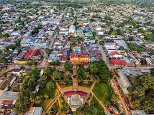

Leticia es una ciudad colombiana ubicada en el extremo sur del pais, en la region de la Amazonia. Es la capital del departamento de Amazonas y se encuentra en la triple frontera entre Colombia, Brasil y Peru. A continuacion, se presentan algunas caracteristicas importantes de Leticia